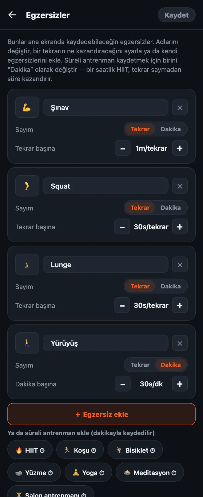

HonorFit'te egzersizlerini nasıl özelleştirirsin
Selam millet! HonorFit benim için bir şınavlı uygulama engelleyici olarak başladı: birkaç şınav çekene kadar Instagram kilitli kalıyor, şınavları da onur sistemiyle kendim kaydediyorum (kamera yok). Uygulama dört egzersizle geliyor: şınav, mekik, barfiks ve squat.
Ama herkes şınav çekmek istemiyor. Belki bileklerin şınavdan nefret ediyor, belki burpee'yi daha çok seviyorsun, belki de bugün zaten 8 km koştun ve bunun sayılmasını istiyorsun. Çok haklısın! O yüzden hepsini değiştirebiliyorsun. İşte tam olarak nasıl yapıldığı, neyin ücretsiz neyin Pro gerektirdiği.
Ne ücretsiz, ne Pro
Önce iyi haber: 1.15.0 sürümünden itibaren bu yazıdaki neredeyse her şey ücretsiz. HonorFit şu değerlerle dört hazır egzersizle geliyor:
| Egzersiz | Her tekrarın kazandırdığı (varsayılan) |
|---|---|
| 💪 Şınav | 1 dakika |
| 🔥 Mekik | 30 saniye |
| 🧗 Barfiks | 1 dakika 30 saniye |
| 🦵 Squat | 30 saniye |
Ücretsiz sürümde egzersizleri yeniden adlandırabilir, sıralarını değiştirebilir ve silebilir, her tekrarın ne kazandıracağını değiştirebilir, süreli antrenmanları dakikayla kaydedebilir ve 3 taneye kadar kendi egzersizini ekleyebilirsin. Çarklar set başına 100'e kadar çıkıyor ve aynı anda 2 saate kadar biriktirebiliyorsun. Engelleme, kayıt ve istatistikler sonsuza kadar ücretsiz.
Pro aylık 3 dolar ya da tek seferlik 19,99 dolar. Bu ABD fiyatı: fiyatlar ülkeye ve para birimine göre değişiyor, mağaza sana kendi fiyatını gösterir. Egzersiz tarafında istediğin kadar kendi egzersizini eklemeni sağlıyor. Ayrıca 2 saatlik biriktirme sınırını kaldırıyor; kayıtlı rutinler, duraklatma, veresiye modu ve aylık ve yıllık geçmiş ekliyor.
1. Egzersiz düzenleyiciyi aç
- Ana ekranda sağ üstteki dişli simgesine dokunup Ayarlar'ı aç.
- En üstteki Egzersizler kartına dokun.
Her egzersiz için bir kart göreceksin. Sağ üstteki Kaydet'e dokunana kadar burada yaptığın hiçbir şey geçerli olmuyor, yani gönlünce kurcalayabilirsin. Kaydetmeden geri çıkarsan hiçbir şey değişmez.

2. Bir egzersizin adını ya da emojisini değiştir
Ada dokun ve ne istersen yaz. Aslında yaptığın buysa “Şınav” “Diz üstü şınav” ya da “Duvar şınavı” olabilir. Simgeyi değiştirmek için soldaki emoji kutusuna dokun ve tablodan birini seç (40 kadar spor temalı emoji var).
Küçük bir not: hazır egzersizlerin adları uygulamanın diline göre değişir, yani telefonun İngilizceyse “Mekik” yerine “Situps” görürsün. Bir egzersizin adını değiştirdiğinde ise tam olarak yazdığın gösterilir.
3. Her tekrarın ne kadar ekran süresi kazandıracağını ayarla
Her egzersizin altında − ve + düğmeleriyle Tekrar başına değeri var. Her dokunuş değeri 5 saniye değiştirir ve en düşük 5 saniyeye kadar inebilir. Yani burpee'yi 1m30s, jumping jack'i 10s yapabilirsin; sana ne adil geliyorsa.
Düzenleyiciyi açmadan sadece değerleri de değiştirebilirsin: Ayarlar'da, Egzersizler kartının hemen altında aynı −/+ düğmeleriyle bir Tekrar değerleri bölümü var.
4. Egzersiz ekle
İki yolu var:
- “＋ Egzersiz ekle”ye dokun. Tekrar başına 30 saniye değerinde “Yeni egzersiz” adlı yeni bir kart gelir. Adını değiştir ve değerini ayarla.
- Bir öneriye dokun. Düğmenin altında tek dokunuşla ekleyebileceğin yaygın egzersizlerden bir sıra var: Burpee, Lunge, Jumping jack, Plank, Mountain climber, Dips, İp atlama, Diz çekerek koşu, Biceps curl, Kettlebell swing, Duvar oturuşu, Russian twist, Kalça köprüsü ve Kegel egzersizi. Bunlar da tekrar başına 30 saniyeden başlar. Birini eklediğinde önerilerden kaybolur.
Ücretsiz sürümde aynı anda en fazla 3 kendi egzersizin olabilir (yeniden adlandırdığın hazır egzersizler buna sayılmaz). Pro ile sınırsız.
Her egzersiz ana ekranda kendi çarkını alıyor, o yüzden ben dört civarında tutardım. Daha fazlası olunca istediğini bulmak için kaydırmaya başlıyorsun.
5. Süreli antrenmanları kaydet (tekrar yerine dakika)
En çok sorulan şey bu. Bazı aktiviteler tekrarla sayılmaz: bir yürüyüş, bir yoga dersi, bir koşu, spor salonunda bir saat. Her kartta Sayım: Tekrar | Dakika seçimi var. Dakika'ya çevirdiğinde o çark dakika saymaya başlar ve değer Dakika başına olur.
Tek dokunuşluk süreli öneriler de var (yanlarında ⏱ var): HIIT, Koşu, Bisiklet, Yüzme, Yoga, Pilates, Meditasyon, Salon antrenmanı ve Yürüyüş.
Yeni süreli antrenmanlar dakika başına 30 saniyeden başlar, yani bir saatlik HIIT 30 dakika uygulama süresi kazandırır. Dikkat: bir egzersizi Tekrar ile Dakika arasında değiştirdiğinde değeri 30 saniyeye sıfırlanır, çünkü “tekrar başına 1 dakika” ile “dakika başına 1 dakika” epey farklı anlaşmalar. Değiştirdikten sonra değeri yeniden ayarla, o kadar.
Çark tam dakika sayıyor, yani 30 saniyelik bir plank Dakika'ya pek uymuyor. Böyle sabit tutuşlu hareketlerde Tekrar'da bırakır, bir tekrarın senin için ne demek olduğuna kendin karar verirdim (mesela 20 saniyelik bir tutuş).
6. Birini sil ya da baştan başla
- O egzersizi silmek için karttaki ✕'e dokun. En az bir egzersiz her zaman kalmalı.
- En alttaki Varsayılanlara dön, orijinal dört egzersizi orijinal değerleriyle geri getirir. Buradaki her şey gibi, bu da ancak Kaydet'e dokunduğunda geçerli olur.
Değerleri ben nasıl seçerdim
Değer, uygulamalarının fiyatı. Amaç, yalan söylemek yerine gerçekten ödeyeceğin bir fiyat bulmak. Birkaç başlangıç noktası:
- Zor hareketler daha çok kazandırsın. Barfiks ve burpee 1m30s, şınav 1m, squat ve lunge 30s.
- Süreli şeyler yaklaşık yarı değerde. Dakika başına 30 saniye, 20 dakikalık bir yürüyüşün sana 10 dakika kaydırma kazandırması demek. En çok istediğin alışkanlık yürüyüşse dakika başına 1 dakikaya çıkar.
- Sayıyı şişirdiğini fark edersen fiyatı düşür. Onur sisteminde benim kuralım bu. Yapmadığın tekrarları kaydetmen, fiyatın yanlış olduğunu gösterir, senin bu işte kötü olduğunu değil.
- Zor mod (ücretsiz), her şeyi tek tek düzenlemeden daha zorlu bir gün istersen, başlıktaki tek bir düğmeyle tüm değerleri yarıya indirir.
Belirli kurulumlar için fikir istersen iki yazı daha yazdım: kilit açma egzersizi olarak Kegel ve kalça köprüsü ve şınav sana göre değilse düşük etkili egzersizler.
HonorFit Blocker, iPhone ve Android için ücretsiz bir uygulama engelleyici. Onur sistemi, kamera yok, hiçbir şey telefonundan çıkmıyor. 3 taneye kadar özel egzersiz ve süreli antrenmanlar ücretsiz; Pro ile sınırsız. Herkese göre değil ama belki bazılarınızın hoşuna gider!